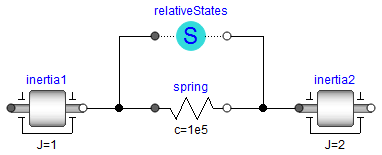

RelativeStatesDefinition of relative state variables |
Information
This information is part of the Modelica Standard Library maintained by the Modelica Association.
Usually, the absolute angle and the absolute angular velocity of Modelica.Mechanics.Rotational.Components.Inertia models are used as state variables. In some circumstances, relative quantities are better suited, e.g., because it may be easier to supply initial values. In such cases, model RelativeStates allows the definition of state variables in the following way:
- Connect an instance of this model between two flange connectors.
- The relative rotation angle and the relative angular velocity between the two connectors are used as state variables.
An example is given in the next figure

Here, the relative angle and the relative angular velocity between the two inertias are used as state variables. Additionally, the simulator selects either the absolute angle and absolute angular velocity of model inertia1 or of model inertia2 as state variables.
See also the discussion State Selection in the User's Guide of the Rotational library.
Parameters (2)
| stateSelect |
Value: StateSelect.prefer Type: StateSelect Description: Priority to use the relative angle and relative speed as states |
|---|---|
| phi_nominal |
Value: 1.0 Type: Angle (rad) Description: Nominal value of the relative angle (used for scaling) |